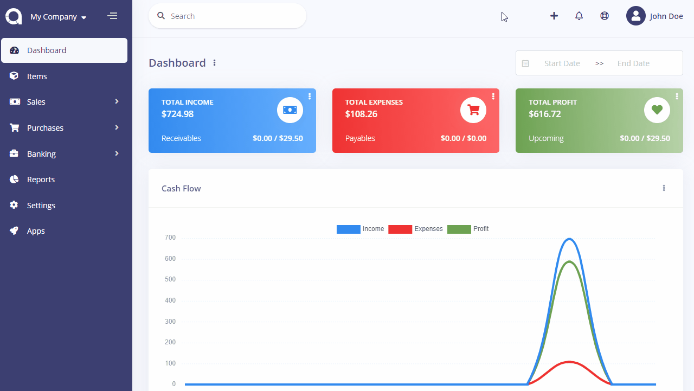
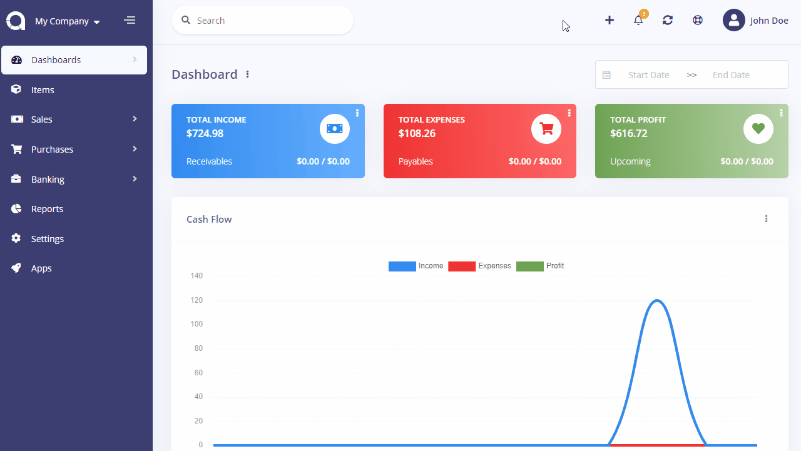
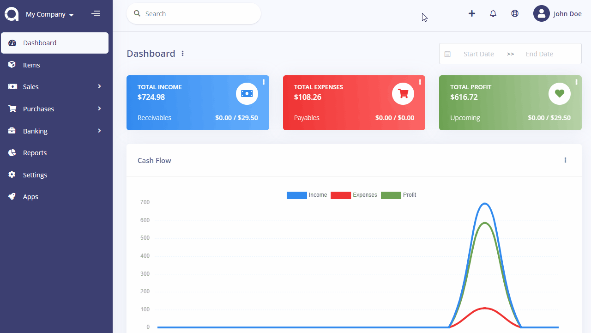

Toolbar
The toolbar is used to gives quick access to the most used or common parts of Doctor Stats.
Search
There is a global search box at the left side of the toolbar that allows to search all records you've entered into Doctor Stats instantly.
Quick Add
The plus button at the right side of toolbar speeds up the progress of adding new Income and Expense records.

Notifications
The bell button at the right side of toolbar will show any available notification, per user/customer. It will notify if there is any item out of stock or there is an invoice/bill overdue.

Updates
The arrows button at the right side of toolbar will show any available update for Doctor Stats and any app installed.
Help
The life ring button at the right side of toolbar will redirect you to this documentation.
User
The user button at the right side of toolbar shows your profile and links to the Users, Roles and Permissions pages.
